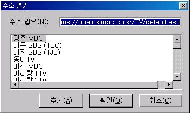

새로운 문서를 작성하고자 할 때에는 [파일] 메뉴의 [새 문서] 메뉴를 사용합니다.
새 문서는 항상 편집 모드로 시작하여 바로 문서 작성이 가능하게 됩니다.
* 독서창 프로그램인 'xvbrd.exe'를 파일 지정 없이 단독으로 실행하면 '새 문서' 기능이 실행되어
새로운 문서를 작성할 수 있게 됩니다.
다른 응용프로그램과 마찬가지로 센스 독서기에서도 '열기' 대화상자를 통해 파일을 열 수 있습니다.
이 기능을 사용하면 독서창을 벗어나지 않은 상태에서 다른 파일을 열어 독서를 계속할 수 있습니다.
독서창 상태에서 [파일] 메뉴의 [열기]를 선택하거나 단축키 <Ctrl-O>키를 누르면 '열기' 대화상자가 나타납니다.
대화상자가 나타나면 원하는 파일을 선택한 후 '열기' 버튼을 눌러 파일을 엽니다.
조합형 텍스트 문서를 독서창에서 열어 글자가 깨져 출력된 경우 이 기능을 이용하여 문서를 다시 열어 줍니다.
'완성형으로 다시 열기' 기능을 활용하여 문서를 다시 연 경우 파일을 저장하게 되면 완성형으로 파일이 저장된다는 점에 유의합니다.
로컬 디스크 상의 파일이 아닌 인터넷의 미디어 파일을 열고자 할 경우 사용합니다. 자주 사용하는 주소는 매번 입력할 필요 없이 등록한 후 목록에서 선택할 수도 있습니다. 주로 인터넷 방송을 청취하기 위한 목적으로 사용합니다.
다음 과정에 따라 주소를 입력하거나 추가할 수 있습니다.

① [파일] 메뉴의 [주소 열기] 메뉴를 실행합니다.
② '주소 열기' 대화상자가 나타나면 '주소 입력' 편집창에 열고자 하는 주소를 입력하거나 목록에서 원하는 항목을 선택합니다.
③ '확인' 버튼을 누르면 주소에서 지정한 인터넷 방송이 나옵니다.
* 목록에 추가하기
① '주소 열기' 대화상자에서 '주소 입력' 편집창에 추가를 원하는 주소를 입력합니다.
② '추가' 버튼을 누릅니다.
③ '이름 입력' 대화상자가 나타나면 '이름' 편집창에 등록에 사용할 이름을 입력합니다.
④ '확인' 버튼을 누릅니다.
센스 독서기에서는 다음 세 가지 방법으로 파일을 저장할 수 있습니다.
1. 저장: <Ctrl-S>
[파일] 메뉴의 [저장] 메뉴를 실행하거나 <Ctrl-S>키를 누릅니다. 현재의 파일을 디스크상에 저장합니다. 만일 한 번도 저장되지 않은 문서의 경우에는 '다른 이름으로 저장' 대화상자가 나타나 저장될 위치와 파일의 이름을 지정할 수 있습니다.
2. 모두 저장: <Ctrl-W>
[파일] 메뉴의 [모두 저장] 메뉴를 실행하거나 <Ctrl-W>키를 누릅니다. 현재 파일 뿐만 아니라 열려있는 모든 파일을 저장합니다.
3. 다른 이름으로 저장: <Alt-A>
[파일] 메뉴의 [다른 이름으로 저장] 메뉴를 실행하거나 <Alt-A> 키를 누릅니다. 현재의 파일을 저장하되 항상 '다른 이름으로 저장' 대화상자가 나타나 저장될 위치와 파일 이름을 지정하게 됩니다.
여러 파일이 열려있는 경우 다음의 방법을 사용하여 현재 재생중인 파일을 중심으로 이전, 다음 파일로 이동할 수 있습니다.
이때 현재의 파일이 마지막 파일이라면 다음 파일로의 이동은 불가능합니다. 마찬가지로 현재 처음 파일에 있는 경우 더이상 이전 파일로의 이동은 이루어 지지 않습니다.
1. 이전 파일로 이동
[파일] 메뉴의 [이전 파일] 메뉴를 선택하거나 단축키 <Ctrl-Shift-Tab> 혹은 <Alt-Pgup>키를 사용합니다.
2. 다음 파일로 이동
[파일] 메뉴의 [다음 파일] 메뉴를 선택하거나 단축키 <Ctrl-Tab> 혹은 <Alt-Pgdn>키를 사용합니다.
독서를 끝내기 위해 독서창을 종료할 때는 아래의 다섯 가지 방법 중 하나를 사용합니다.
1. 종료
[파일] 메뉴의 [종료] 메뉴를 실행하거나 <Ctrl-F4>키를 누르면 현재 파일을 종료합니다. 여러 파일이 열려 있었던 경우에는 다음 파일을 사용할 수 있게 되며 더이상 열려있는 파일이 없을 경우에는 독서창을 완전히 종료합니다.
2. 모두 종료
독서를 하던 중 언제든 <esc>키를 누르면 독서창을 종료할 수 있습니다. 이때에는 열려져 있는 모든 파일을 종료합니다.
[파일] 메뉴의 [모두 종료] 메뉴를 선택하거나 <Alt-F4>키를 눌러도 됩니다.
3. 마크 정보만 저장하고 종료
독서중 마크를 수정한 경우라면 반드시 마크에 관한 정보를 저장해 주어야 다음에 수정된 마크를 사용할 수 있습니다. 마크 정보를 저장하지 않으면 현재 지정한 마크 정보를 잃게 됩니다.
[파일] 메뉴에서 [마크정보만 저장하고 종료]를 사용하거나 독서 모드에서 'q'를 누르면 마크 정보를 저장하고 종료할 수 있습니다.
4. 마크, 책갈피를 저장하고 종료
다음에 같은 파일을 열었을 때 현재 독서하던 위치부터 독서를 계속하기 위해서는 책갈피를 저장해야 합니다. 첵갈피가 저장된 파일을 열었을 때 센스 독서기는 책갈피가 있는 위치로 자동 이동되며 그 곳에서 독서를 시작할 수 있도록 합니다.
[파일] 메뉴의 [마크, 책갈피를 저장하고 종료] 메뉴를 사용하거나 독서 모드에서 's'를 눌러 책갈피를 저장할 수 있습니다. 이때에는 마크 정보도 함께 저장되기 때문에 종료하는 가장 일반적인 방법입니다.
5. 마크, 책갈피를 없애고 종료
더이상 마크와 책갈피가 필요하지 않을 경우 마크와 책갈피 정보를 없애면서 종료할 수 있습니다.
[파일] 메뉴의 [마크, 책갈피를 없애고 종료] 메뉴를 사용하거나 독서 모드에서 단축키 'x'를 사용합니다.
이 기능을 실행한 후에는 마크와 책갈피 정보가 없어지기 때문에 다음에 같은 파일을 열었을 때 파일의 처음부터 재생하게 되며, 마크 이동을 할 수 없게 됩니다.
# 위의 설명 중 마크는 일반 마크와 마크1, 마크2를 모두 포함합니다.
센스 독서기에서는 최근에 열었던 파일을 최대 10개까지 기억하고 있습니다.
'최근 파일 열기' 기능을 활용하면 최근에 열었던 문서를 다시 열기 위해 파일이 위치한 폴더까지 이동할 필요가 없어집니다.
최근에 열었던 파일들은 [파일] -> [최근 파일] 메뉴의 하위 메뉴 형태로 등록이 됩니다. 열기 원하는 최근 파일이 등록된 메뉴 항목을 실행하면 해당 파일이 열립니다.
파일의 등록은 파일을 열었던 역순으로 이루어지기 때문에 가장 최근에 사용한 파일이 메뉴의 제일
처음에 위치하게 됩니다. 또한 파일의 수가 10이 넘어가는 경우 가장 오래된 항목을 삭제하고 최근의 파일을 등록합니다.